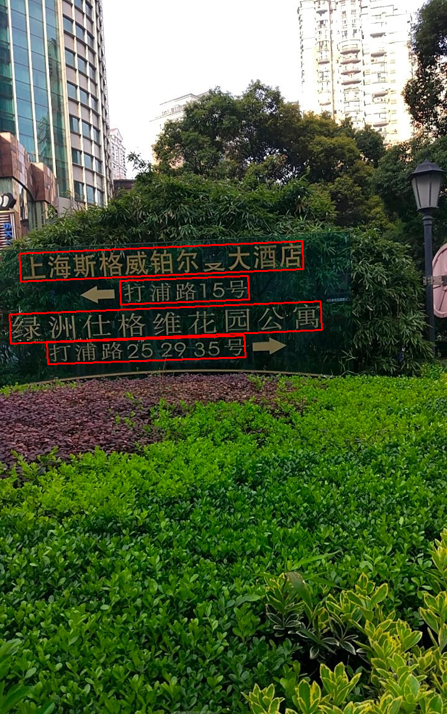
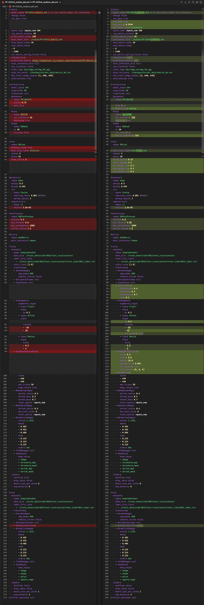
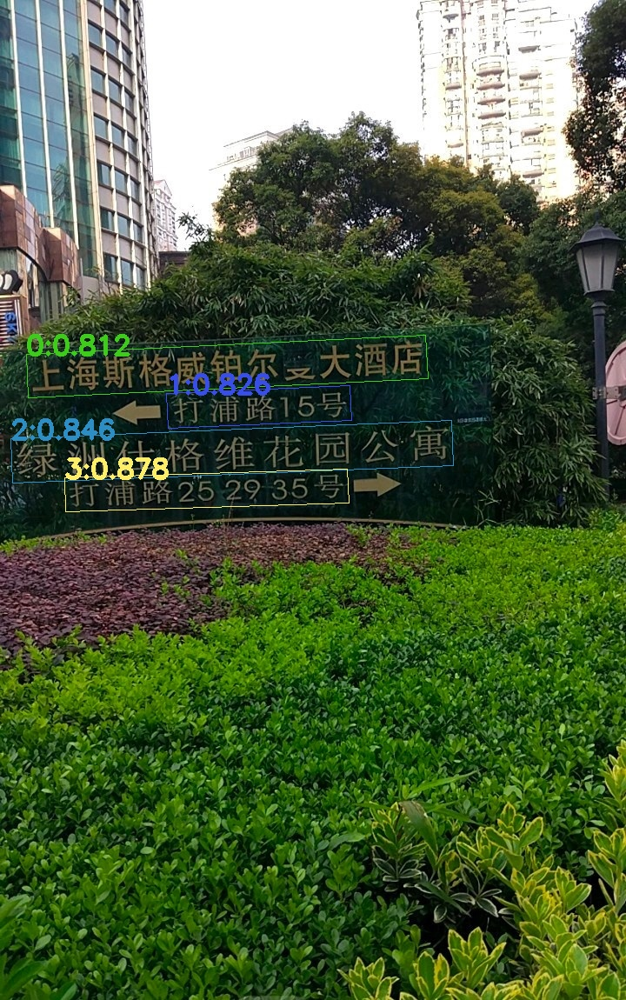

RapidOCR 集成 PP-OCRv6 Det 模型记录
引言
来自 PaddleOCR官方文档：
PP-OCRv6 是 PP-OCR 最新一代通用文字识别解决方案。PP-OCRv6 基于全新设计的 PPLCNetV4 统一骨干网络，提供 tiny, small, medium 三档模型，分别面向端侧 /IoT、移动端 / 桌面端、服务端场景。PP-OCRv6 在语言覆盖方面实现重大突破，medium/small 档单一模型统一支持简体中文、繁体中文、英文、日文及 46 种拉丁语系语言共 50 种语言（tiny 档支持 49 种，不含日文）。在内部多场景综合评估集上，PP-OCRv6_medium 相比 PP-OCRv5_server 识别精度提升 5.1%、检测精度提升 4.6%，同时 GPU 推理速度提升 2.37×；以仅 34.5M 参数的规模，精度超越 Qwen3-VL-235B, GPT-5.5 等大型视觉语言模型。
官方模型托管地址：https://www.modelscope.cn/collections/PaddlePaddle/PP-OCRv6
以下代码运行环境
- OS: macOS Tahoe 26.5.1
- Python: 3.10.14
- PaddlePaddle: 3.1.0
- paddle2onnx: 2.1.0
- paddlex: 3.7.1
- rapidocr: 3.8.4
1. 模型跑通
该步骤主要先基于 PaddleX 可以正确使用 PP-OCRv6_medium_det 模型得到正确结果。
该部分主要参考文档：docs
安装 paddlex:
| pip install "paddlex[ocr]==3.7.1"
|
测试 PP-OCRv6_medium_det 模型能否正常识别：
Tip
运行以下代码时，模型会自动下载到 /Users/用户名/.paddlex/official_models 下。
测试图：link
| from paddlex import create_model
# medium
model = create_model(model_name="PP-OCRv6_medium_det")
# small
model = create_model(model_name="PP-OCRv6_small_det")
# tiny
model = create_model(model_name="PP-OCRv6_tiny_det")
output = model.predict("images/general_ocr_001.png", batch_size=1)
for res in output:
res.print()
res.save_to_img(save_path="./output/")
res.save_to_json(save_path="./output/res.json")
|
预期结果如下，表明成功运行：

2. 模型转换
PaddlePaddle 官方提供了 ONNX 模型，但是考虑到自己训练的模型，仍然需要转换。因此这一步更多地是验证使用当前工具可以自行转换模型。
该部分主要参考文档：docs
PaddleX 官方集成了 paddle2onnx 的转换代码：
| paddlex --install paddle2onnx
pip install onnx==1.17.0
paddlex --paddle2onnx --paddle_model_dir models/official_models/PP-OCRv6_medium_det --onnx_model_dir models/PP-OCRv6_det_medium
|
输出日志如下，表明转换成功：
| Input dir: models/official_models/PP-OCRv6_medium_det
Output dir: models/PP-OCRv6_det_medium
Paddle2ONNX conversion starting...
/Users/xxxx/miniconda3/envs/py310/lib/python3.10/site-packages/paddle/utils/cpp_extension/extension_utils.py:715: UserWarning: No ccache found. Please be aware that recompiling all source files may be required. You can download and install ccache from: https://github.com/ccache/ccache/blob/master/doc/INSTALL.md
warnings.warn(warning_message)
[Paddle2ONNX] Start parsing the Paddle model file...
[Paddle2ONNX] Use opset_version = 11 for ONNX export.
[Paddle2ONNX] PaddlePaddle model is exported as ONNX format now.
2026-06-17 22:13:44 [INFO] Try to perform constant folding on the ONNX model with Polygraphy.
[W] 'colored' module is not installed, will not use colors when logging. To enable colors, please install the 'colored' module: python3 -m pip install colored
[I] Folding Constants | Pass 1
[I] Total Nodes | Original: 1268, After Folding: 597 | 671 Nodes Folded
[I] Folding Constants | Pass 2
[I] Total Nodes | Original: 597, After Folding: 597 | 0 Nodes Folded
2026-06-17 22:13:53 [INFO] ONNX model saved in models/PP-OCRv6_det_medium/inference.onnx.
Paddle2ONNX conversion succeeded
Copied models/official_models/PP-OCRv6_medium_det/inference.yml to models/PP-OCRv6_det_medium/inference.yml
Done
|
PaddleX 官方集成了 paddle2onnx 的转换代码：
| paddlex --install paddle2onnx
pip install onnx==1.17.0
paddlex --paddle2onnx --paddle_model_dir models/official_models/PP-OCRv6_small_det --onnx_model_dir models/PP-OCRv6_det_small
|
输出日志如下，表明转换成功：
| Input dir: models/official_models/PP-OCRv6_small_det
Output dir: models/PP-OCRv6_det_small
Paddle2ONNX conversion starting...
/Users/xxxx/miniconda3/envs/py310/lib/python3.10/site-packages/paddle/utils/cpp_extension/extension_utils.py:715: UserWarning: No ccache found. Please be awarethat recompiling all source files may be required. You can download and install ccache from: https://github.com/ccache/ccache/blob/master/doc/INSTALL.md
warnings.warn(warning_message)
[Paddle2ONNX] Start parsing the Paddle model file...
[Paddle2ONNX] Use opset_version = 11 for ONNX export.
[Paddle2ONNX] PaddlePaddle model is exported as ONNX format now.
2026-06-17 22:20:02 [INFO] Try to perform constant folding on the ONNX model with Polygraphy.
[W] 'colored' module is not installed, will not use colors when logging. To enablecolors, please install the 'colored' module: python3 -m pip install colored
[I] Folding Constants | Pass 1
[I] Total Nodes | Original: 928, After Folding: 464 | 464 Nodes Folded
[I] Folding Constants | Pass 2
[I] Total Nodes | Original: 464, After Folding: 464 | 0 Nodes Folded
2026-06-17 22:20:11 [INFO] ONNX model saved in models/PP-OCRv6_det_small/inference.onnx.
Paddle2ONNX conversion succeeded
Copied models/official_models/PP-OCRv6_small_det/inference.yml to models/PP-OCRv6_det_small/inference.yml
Done
|
PaddleX 官方集成了 paddle2onnx 的转换代码：
| paddlex --install paddle2onnx
pip install onnx==1.17.0
paddlex --paddle2onnx --paddle_model_dir models/official_models/PP-OCRv6_tiny_det --onnx_model_dir models/PP-OCRv6_det_tiny
|
输出日志如下，表明转换成功：
| Input dir: models/official_models/PP-OCRv6_tiny_det
Output dir: models/PP-OCRv6_det_tiny
Paddle2ONNX conversion starting...
/Users/xxxx/miniconda3/envs/py310/lib/python3.10/site-packages/paddle/utils/cpp_extension/extension_utils.py:715: UserWarning: No ccache found. Please be aware that recompiling all source files may be required. You can download and install ccache from: https://github.com/ccache/ccache/blob/master/doc/INSTALL.md
warnings.warn(warning_message)
[Paddle2ONNX] Start parsing the Paddle model file...
[Paddle2ONNX] Use opset_version = 11 for ONNX export.
[Paddle2ONNX] PaddlePaddle model is exported as ONNX format now.
2026-06-17 22:21:03 [INFO] Try to perform constant folding on the ONNX model with Polygraphy.
[W] 'colored' module is not installed, will not use colors when logging. To enable colors, please install the 'colored' module: python3 -m pip install colored
[I] Folding Constants | Pass 1
[I] Total Nodes | Original: 928, After Folding: 464 | 464 Nodes Folded
[I] Folding Constants | Pass 2
[I] Total Nodes | Original: 464, After Folding: 464 | 0 Nodes Folded
2026-06-17 22:21:11 [INFO] ONNX model saved in models/PP-OCRv6_det_tiny/inference.onnx.
Paddle2ONNX conversion succeeded
Copied models/official_models/PP-OCRv6_tiny_det/inference.yml to models/PP-OCRv6_det_tiny/inference.yml
Done
|
3. 模型推理验证
我这里主要验证 PP-OCRv6_medium_det 模型，small 和 tiny 版除了参数量区别外，其余都一样，因此不做重复验证。
该部分主要是在 RapidOCR 项目中测试能否直接使用 onnx 模型。要点主要是确定模型前后处理是否兼容。从 PaddleOCR config 文件中比较 PP-OCRv5 mobile det 和 PP-OCRv6 medium det 文件差异：

从上图中可以看出，除了训练阶段的配置有差异外，推理阶段配置基本一模一样，因此现有 rapidocr 前后推理代码可以直接使用。
值得注意的是，后处理阶段的中默认参数变了。这一点我这里先不动，后期我再仔细核验。
| from rapidocr import RapidOCR
model_path = "models/onnx/PP-OCRv6_det_medium.onnx"
engine = RapidOCR(params={"Det.model_path": model_path})
img_url = "https://paddle-model-ecology.bj.bcebos.com/paddlex/imgs/demo_image/general_ocr_001.png"
result = engine(img_url, use_det=True, use_rec=False, use_cls=False)
print(result)
result.vis("vis_result.jpg")
|

4. 模型精度测试
Warning
测试集 text_det_test_dataset 包括卡证类、文档类和自然场景三大类。其中卡证类有 82 张，文档类有 75 张，自然场景类有 55 张。缺少手写体、繁体、日文、古籍文本、拼音、艺术字等数据。因此，该基于该测评集的结果仅供参考。
欢迎有兴趣的小伙伴，可以和我们一起共建更加全面的测评集。
该部分主要使用 TextDetMetric 和测试集 text_det_test_dataset 来评测。
需要安装的包如下：
| pip install datasets
pip install text_det_metric
|
⚠️注意：以下代码基于 rapidocr==3.8.4 版本测试
相关测试步骤请参见 TextDetMetric 的 README，一步一步来就行。
| import time
import cv2
import numpy as np
from datasets import load_dataset
from tqdm import tqdm
from paddlex import create_model
# PP-OCRv6_medium_det / PP-OCRv6_small_det / PP-OCRv6_tiny_det
model = create_model(model_name="PP-OCRv6_medium_det")
dataset = load_dataset("SWHL/text_det_test_dataset")
test_data = dataset["test"]
content = []
for i, one_data in enumerate(tqdm(test_data)):
img = np.array(one_data.get("image"))
img = cv2.cvtColor(img, cv2.COLOR_RGB2BGR)
t0 = time.perf_counter()
ocr_results = next(model.predict(input=img, batch_size=1))
dt_boxes = ocr_results["dt_polys"].tolist()
elapse = time.perf_counter() - t0
gt_boxes = [v["points"] for v in one_data["shapes"]]
content.append(f"{dt_boxes}\t{gt_boxes}\t{elapse}")
with open("pred.txt", "w", encoding="utf-8") as f:
for v in content:
f.write(f"{v}\n")
from text_det_metric import TextDetMetric
metric = TextDetMetric()
pred_path = "pred.txt"
metric = metric(pred_path)
print(metric)
|
| import cv2
import numpy as np
from rapidocr import EngineType, OCRVersion, RapidOCR
from tqdm import tqdm
from datasets import load_dataset
model_dir = "models/official_models/PP-OCRv6_medium_det"
engine = RapidOCR(
params={
"Det.ocr_version": OCRVersion.PPOCRV5,
"Det.engine_type": EngineType.PADDLE,
"Det.model_dir": model_dir,
}
)
dataset = load_dataset("SWHL/text_det_test_dataset")
test_data = dataset["test"]
content = []
for i, one_data in enumerate(tqdm(test_data)):
img = np.array(one_data.get("image"))
img = cv2.cvtColor(img, cv2.COLOR_RGB2BGR)
ocr_results = engine(img, use_det=True, use_cls=False, use_rec=False)
dt_boxes = ocr_results.boxes
dt_boxes = [] if dt_boxes is None else dt_boxes.tolist()
elapse = ocr_results.elapse
gt_boxes = [v["points"] for v in one_data["shapes"]]
content.append(f"{dt_boxes}\t{gt_boxes}\t{elapse}")
with open("pred.txt", "w", encoding="utf-8") as f:
for v in content:
f.write(f"{v}\n")
from text_det_metric import TextDetMetric
metric = TextDetMetric()
pred_path = "pred.txt"
metric = metric(pred_path)
print(metric)
|
| import cv2
import numpy as np
from rapidocr import EngineType, ModelType, OCRVersion, RapidOCR
from tqdm import tqdm
from datasets import load_dataset
model_path = "models/onnx/PP-OCRv6_det_medium.onnx"
engine = RapidOCR(
params={
"Det.ocr_version": OCRVersion.PPOCRV5,
"Det.engine_type": EngineType.ONNXRUNTIME,
"Det.model_path": model_path,
}
)
dataset = load_dataset("SWHL/text_det_test_dataset")
test_data = dataset["test"]
content = []
for i, one_data in enumerate(tqdm(test_data)):
img = np.array(one_data.get("image"))
img = cv2.cvtColor(img, cv2.COLOR_RGB2BGR)
ocr_results = engine(img, use_det=True, use_cls=False, use_rec=False)
dt_boxes = ocr_results.boxes
dt_boxes = [] if dt_boxes is None else dt_boxes.tolist()
elapse = ocr_results.elapse
gt_boxes = [v["points"] for v in one_data["shapes"]]
content.append(f"{dt_boxes}\t{gt_boxes}\t{elapse}")
with open("pred.txt", "w", encoding="utf-8") as f:
for v in content:
f.write(f"{v}\n")
from text_det_metric import TextDetMetric
metric = TextDetMetric()
pred_path = "pred.txt"
metric = metric(pred_path)
print(metric)
|
指标汇总如下（以下指标均为 CPU 下计算所得）：
| Exp |
模型 |
推理框架 |
模型格式 |
Precision↑ |
Recall↑ |
H-mean↑ |
Elapse↓ |
| 1 |
PP-OCRv6_medium_det |
PaddleX |
PaddlePaddle |
0.8437 |
0.8598 |
0.8517 |
1.1844 |
| 2 |
PP-OCRv6_small_det |
PaddleX |
PaddlePaddle |
0.8374 |
0.8338 |
0.8356 |
0.2745 |
| 3 |
PP-OCRv6_tiny_det |
PaddleX |
PaddlePaddle |
0.7599 |
0.8125 |
0.7853 |
0.1403 |
|
|
|
|
|
|
|
|
| 4 |
PP-OCRv6_medium_det |
RapidOCR |
PaddlePaddle |
0.8254 |
0.8598 |
0.8423 |
3.286 |
| 5 |
PP-OCRv6_small_det |
RapidOCR |
PaddlePaddle |
0.854 |
0.8445 |
0.8492 |
0.743 |
| 6 |
PP-OCRv6_tiny_det |
RapidOCR |
PaddlePaddle |
0.8244 |
0.8285 |
0.8264 |
0.393 |
|
|
|
|
|
|
|
|
| 7 |
PP-OCRv6_medium_det |
RapidOCR |
ONNX Runtime |
0.8251 |
0.8598 |
0.8421 |
0.9491 |
| 8 |
PP-OCRv6_small_det |
RapidOCR |
ONNX Runtime |
0.854 |
0.8445 |
0.8492 |
0.2277 |
| 9 |
PP-OCRv6_tiny_det |
RapidOCR |
ONNX Runtime |
0.8241 |
0.8285 |
0.8263 |
0.1318 |
|
|
|
|
|
|
|
|
| 10 |
PP-OCRv5_mobile_det |
PaddleX |
PaddlePaddle |
0.7864 |
0.8018 |
0.7940 |
0.1956 |
| 11 |
PP-OCRv5_mobile_det |
RapidOCR |
PaddlePaddle |
0.7861 |
0.8266 |
0.8058 |
0.5328 |
| 12 |
PP-OCRv5_mobile_det |
RapidOCR |
ONNX Runtime |
0.7861 |
0.8266 |
0.8058 |
0.1653 |
| 13 |
PP-OCRv5_mobile_det |
RapidOCR |
PyTorch |
0.7861 |
0.8266 |
0.8058 |
0.8861 |
| 14 |
PP-OCRv4_mobile_det |
RapidOCR |
ONNX Runtime |
0.8301 |
0.8659 |
0.8476 |
- |
|
|
|
|
|
|
|
|
| 15 |
PP-OCRv5_server_det |
PaddleX |
PaddlePaddle |
0.8347 |
0.8583 |
0.8463 |
2.1450 |
| 16 |
PP-OCRv5_server_det |
RapidOCR |
PaddlePaddle |
|
|
|
|
| 17 |
PP-OCRv5_server_det |
RapidOCR |
ONNX Runtime |
0.7394 |
0.8442 |
0.7883 |
2.0628 |
| 18 |
PP-OCRv4_server_det |
RapidOCR |
ONNX Runtime |
0.7922 |
0.8128 |
0.7691 |
- |
| 19 |
PP-OCRv4_server_det |
RapidOCR |
PyTorch |
0.7394 |
0.8442 |
0.7883 |
5.9122 |
从以上结果来看，可以得到以下结论：
- Exp1-3 和 Exp4-6 相比，差异点在于前后处理以及默认参数，从 H-mean 来看，medium 官方推理为 0.8517，而基于 RapidOCR 框架是 0.8423。small 和 tiny 两个模型，H-mean 对比，基于 RapidOCR 框架推理反而更高。这个具体原因暂时不明。
- Exp1-3 和 Exp4-6 推理速度来看，猜测 RapidOCR 中封装的推理 Paddle 格式模型代码应该有些没对齐的，后续这块也会详细查看。
- Exp4-6 和 Exp7-9 相比，paddle 格式模型转换为 ONNX 格式后，指标几乎一致，说明 模型转换前后，误差较小，推理速度也有提升。
- 从 H-mean 指标来看，Exp8 PP-OCRv6_small_det 中 H-mean 0.8492 要好于 Exp12 PP-OCRv5_mobile_det 0.8058, Exp14 PP-OCRv4_mobile_det 0.8476。同时，考虑到 PP-OCRv6 ONNX 模型的存储大小：medium 62.12 MB, small 9.93 MB, tiny 1.83 MB。后续集成版本，我会倾向于将 PP-OCRv6_small_det 作为默认模型。
写在最后
这部分代码已经集成到 rapidocr==3.9.0 中。相关工作正在进行中，欢迎持续关注。
{kind=link}